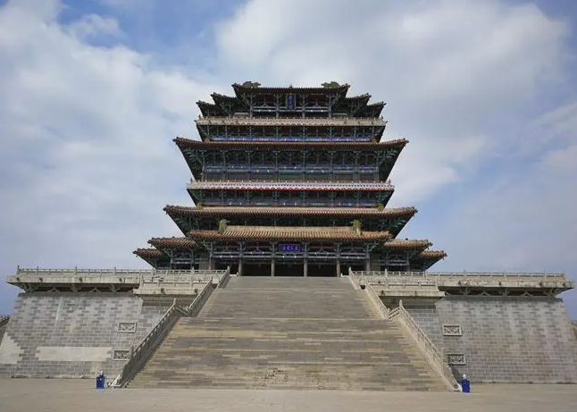

鹳雀楼，又名鹳鹊楼，位于山西省运城市永济市蒲州镇，在东经110°15′00″～110°45′33″和北纬34°44′50″～35°04′50″之间，总建筑面积33206平方米，总重量58000吨。鹳雀楼始建于北周时期，在金元光元年（1222年）遭大火焚毁，1997年12月，鹳雀楼重建，2002年10月1日，鹳雀楼正式对游客开放。
鹳雀楼为高台式十字歇山顶楼阁，外观3层4檐，内部为9层使用空间，并设置电梯、楼梯组织垂直交通。整座楼阁分为台基和楼身两部分，总高度达73.9米，是四大名楼中最高的一座，是中国仿造楼中较为精致的。鹳雀楼整个的油漆彩画，是国内失传的唐代彩画艺术，经过国家文物局的专家多方考察抢救，重新创作设计，故鹳雀楼是国内唯一采用唐代彩画艺术恢复的唐代建筑。
------------------------------------------------返回上页----------------------------------------------------- |